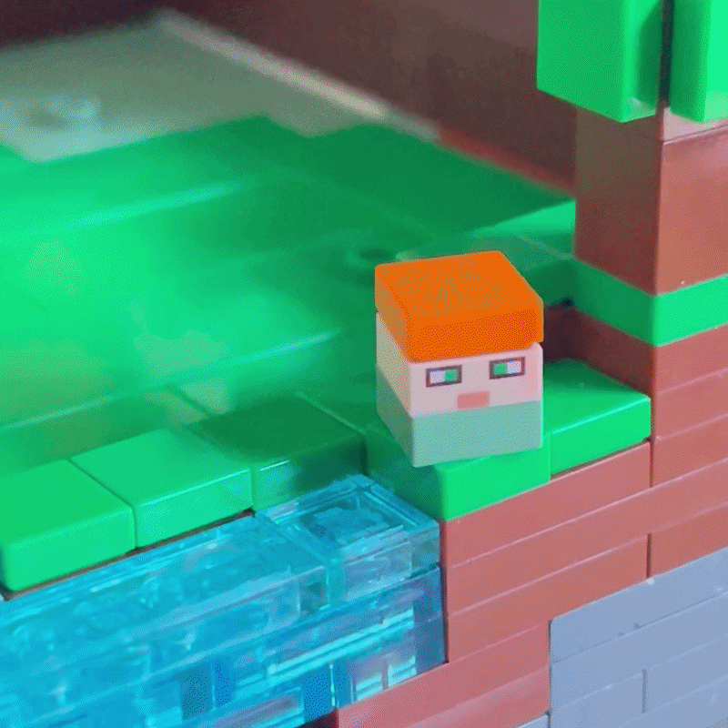

This model was made for Cheesey Studio's LEGO Minecraft build competition in July 2026. The prompt was to build a place where a mob of your choosing resides, whether it be a mob house like the official sets, a biome, a realm, or anything you could imagine. My model focuses on the Breeze, and explores a question I kept coming back to while inside the Trial Chambers: why is the Breeze underground?
The Breeze is essentially Minecraft's wind elemental, serving as a counterpart to the Blaze. While Blazes inhabit the depths of the fiery abyss that is the Nether, the Breeze spends its existence imprisoned within ancient Trial Chambers underground. I imagined that, despite its duty to guard these forgotten halls, it still longs for the place where wind truly belongs: the open sky. That idea became the foundation of this model.
The centerpiece is inspired by the Creator (Music Box) music disc. While the Breeze dreams of freedom above the clouds, it never forgets where it came from. The copper chest serves as both a keepsake and a music box, preserving a miniature Trial Chamber inside. Although copper chests were originally introduced alongside the Copper Golem, the heavy use of copper throughout Trial Chambers, combined with its warm, nostalgic tones, made it the perfect choice. A gear hidden on the back allows the interior scene to rotate, recreating a miniature version of the official LEGO Trial Chamber set.
To capture the feeling of flight, nearly everything surrounding the chest is built in microscale. This isn't a style I use very often, but it allowed me to create a much larger world within the contest's limited footprint. By shrinking the Overworld below and surrounding the Breezes with clouds, they appear to soar high above the landscape, finally returning to the skies they were meant to inhabit.
As a continued effort to include more play features into my models, I knew there needed to be some functionality within this one as well. Instead of specifically focusing on just moving features, I wanted to make something that could be displayed in different ways.

Making the chest functional was integral to the entirety of the model. I had a ton of ideas, but I kept coming back to the idea of housing a fixture inside that could spin, similar to those found in ballerina music boxes. While I originally wanted to make the stage raise up with the micro model, the limited space and time constraints of this model made that unfeasible. As a compromise, the micro model inside, which is a micro-scale version of 21271 The Trial Chamber, can spin and is also easily removable. The design of the chest itself also features several small details, from the half-plate indent to the panels on the sides and the Breeze face on the inside of the top. The entire chest can also be removed from the model and displayed separately.

Once the chest is removed from the model, there's a big gap in the middle. I took inspiration from 21265 The Crafting Table, where removing the micro-world sections reveals a map of the world underneath! This wasn't enough for me, however. I wanted to create additional sections that could fill in the hole while representing the world the map shows. The model originally didn't have any underground or underwater sections, but in order to accommodate storage for these sections, they needed to be added. Honestly, I am so happy it went this way! This not only inspired essentially half of the model to be created, but also allows for more variation when displaying the model.

I really wanted to incorporate a general play feature into my model as well, and while working at a micro scale, it was honestly a challenge to come up with something that would work. I had a lot of unused space inside the bottom of the model, and when I added a Trial Chamber, I knew I needed to include a Wind Charge feature. Using a stud shooter, I could launch a white 1x1 round plate to act as a Wind Charge! It ended up being a little difficult to reset, so I added some transparent pieces to make it easier while still preserving the look of the feature. I also wanted to continue creating play features that wouldn't compromise the displayability of the model. By using a rubber piece, you can push down on a section of the model to launch the stud, and the rubber piece then pushes it back up to align with the rest of the terrain.
I had an incredible time designing this model and challenging myself, not only by experimenting with new building techniques, scale, and creative parts usage, but by seeing just how far I could push both the contest prompt and its constraints.